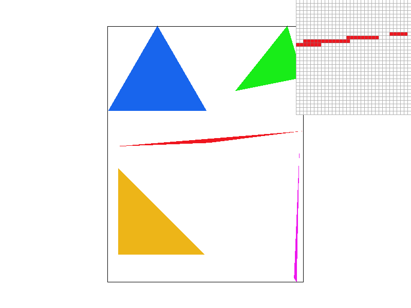
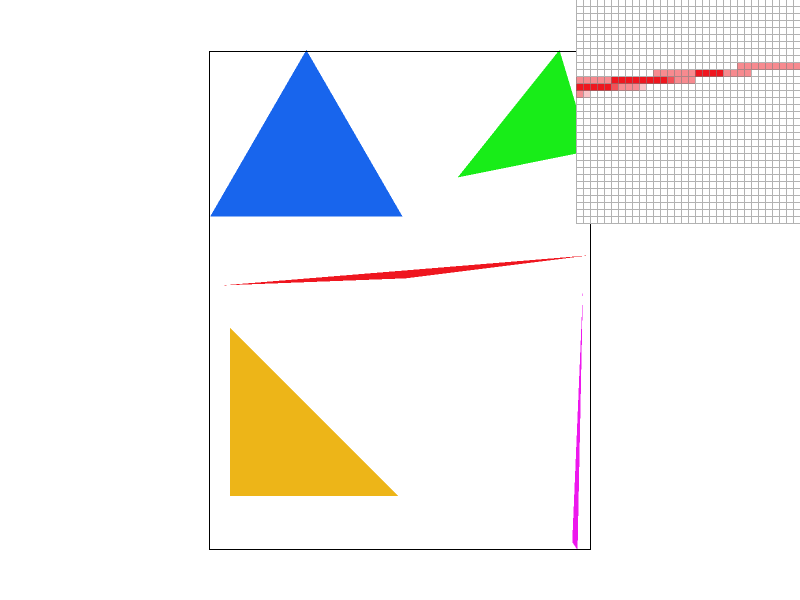
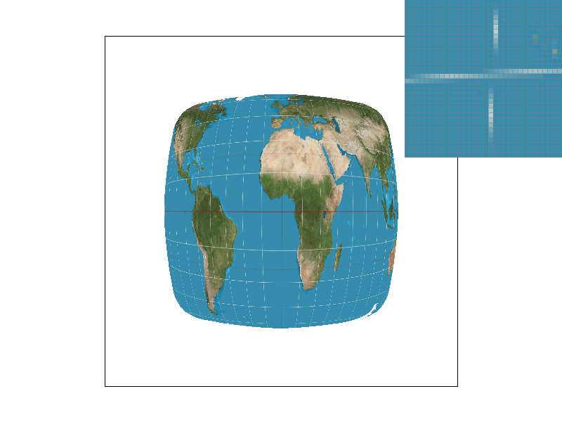

Overview
In this project, we built a basic rasterizer to display SVG images. We applied different techniques learned in lecture such as supersampling, transforms, and barycentric coordinates to render different kinds of images in different scenarios. This project really helped us better understand in a much more visceral sense the effects of things like different antialiasing methods on the appearance of images, as well as how these techniques interacted with image sizes and sampling rates. Overall, we feel this was a great foundational project to familiarize ourselves with some fundamental ideas on computer graphics, and we look forward to learning even more in future projects.
Section I: Rasterization
Part 1: Rasterizing single-color triangles
We rasterize triangles by iterating through the bounding box of the triangle and sampling for each pixel using the line test. In our implementation for this task, we first made sure the points were in a counter-clockwise order by doing a line test of the third point in relation to the first 2, and swapping if necessary. Then, for points within the bounding box, we performed the line test, checking that all 3 were >= 0, and filling the pixels accordingly.
Our algorithm is no worse than one that checks each sample within the bounding box of the triangle because we iterate exactly through the bounding box of the triangle, and on each iteration we only perform constant time arithmetic calculations.
Part 2: Antialiasing triangles
Our supersampling algorithm is as follows:
- Supersample into sample buffer.
- Resolve to framebuffer by averaging from sample buffer.
|

|

|
|
As seen from the screenshots, as sampling rate increases, we get more graduated changes in color at the thin edges of our triangles. This is because each pixel in the image is being averaged from multiple supersamples, and at the edge of a shape there will be only a fraction of samples inside the shape, hence resulting in a shade of the original color. This effect reduces the appearance of artifacts since edges become "softer" in a sense, gradually changing between the shape and the surroundings, as opposed to an image without supersampling that simply takes the full color of the sampled pixel.
Part 3: Transforms
Cubeman just came back from the gym and is looking extra swole. Note his buffed up legs and rock hard biceps. He is also flexing to the ladies to show off his calves and sexy arm muscles.
Section II: Sampling
Part 4: Barycentric coordinates
Barycentric coordinates are where points in a triangle are specified by their proportional distances from each of the 3 vertices. When interpolating textures/colors, we can just specify the colors at the vertices, and take the color at a point as an average of the 3 colors, weighted by the point's distance from each vertex.

Part 5: "Pixel sampling" for texture mapping
Pixel sampling is the practice of determining the color at a location in a texture mapping based on the colors at surrounding pixels in a texture image. In this task, we implemented two different pixel sampling algorithms to perform texture mapping. The first pixel sampling method was nearest sampling. In this method, we return the closest pixel to a texture coordinate in a texture image by taking the closer of the floor/ceiling for each coordinate, clamping when necessary to stay within the bounds of the image. The second pixel sampling methods was bilinear sampling. In this method, we first find the four closest points in the texture image to the given coordinate. Then, we perform a set of linear interpolations to return a weighted average (proportional to distance from sample coordinate) of the colors of each texel.
|
|
|
|

|
|
When sampling rate is 1, we see significantly more artifacts in nearest sampling, with more prominent jaggies and disconnected lines. In contrast, the lines in bilinear sampling are more smooth. Similarly, when sampling rate is 16, we see slightly more jagged lines when using nearest sampling vs bilinear sampling. Based on these screenshots, it seems that there might be a large difference between bilinear and nearest sampling when there are lines or sharp changes between colors within the image, for example in the white latitude and longitude lines on the blue background in the screenshots provided. Since bilinear sampling takes some averages of points, it has more antialiasing effects than nearest sampling, which results in sharper edges and artifacts.
Part 6: "Level sampling" with mipmaps for texture mapping
Section III: Art Competition
If you are not participating in the optional art competition, don't worry about this section!